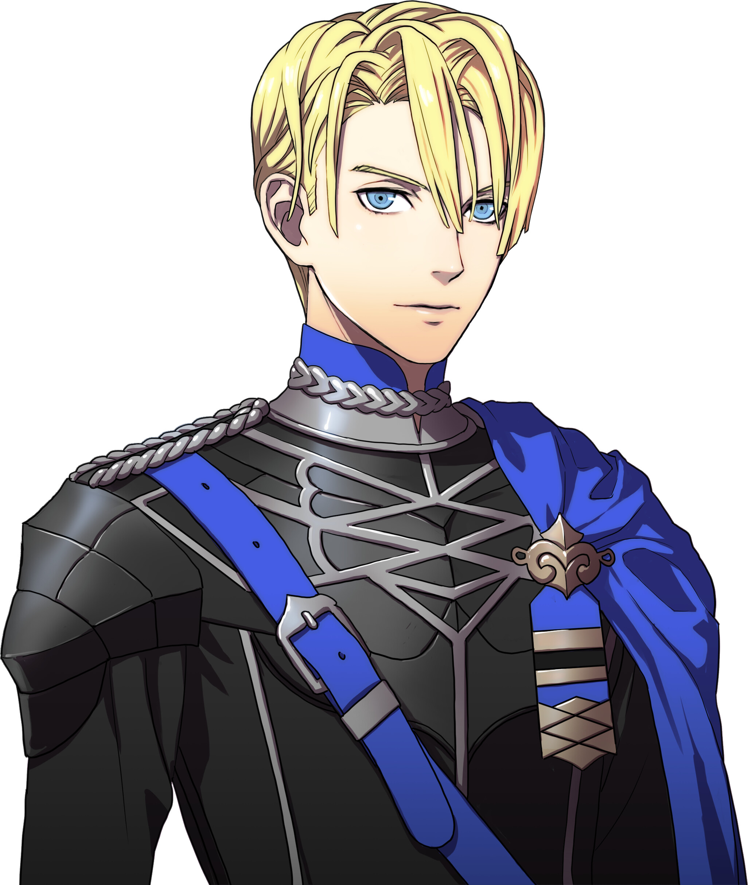
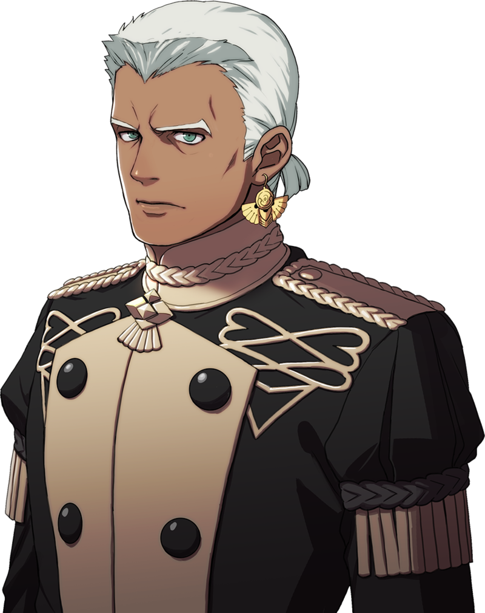
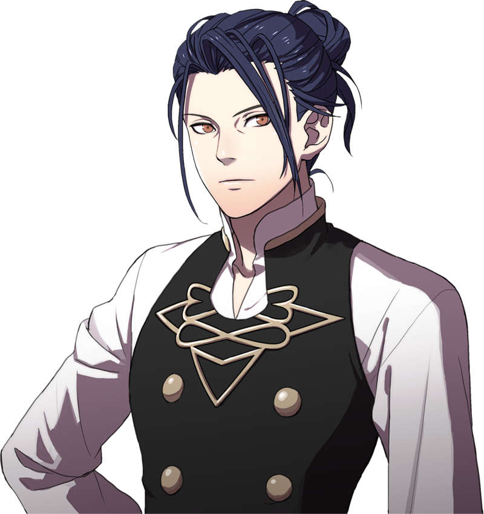
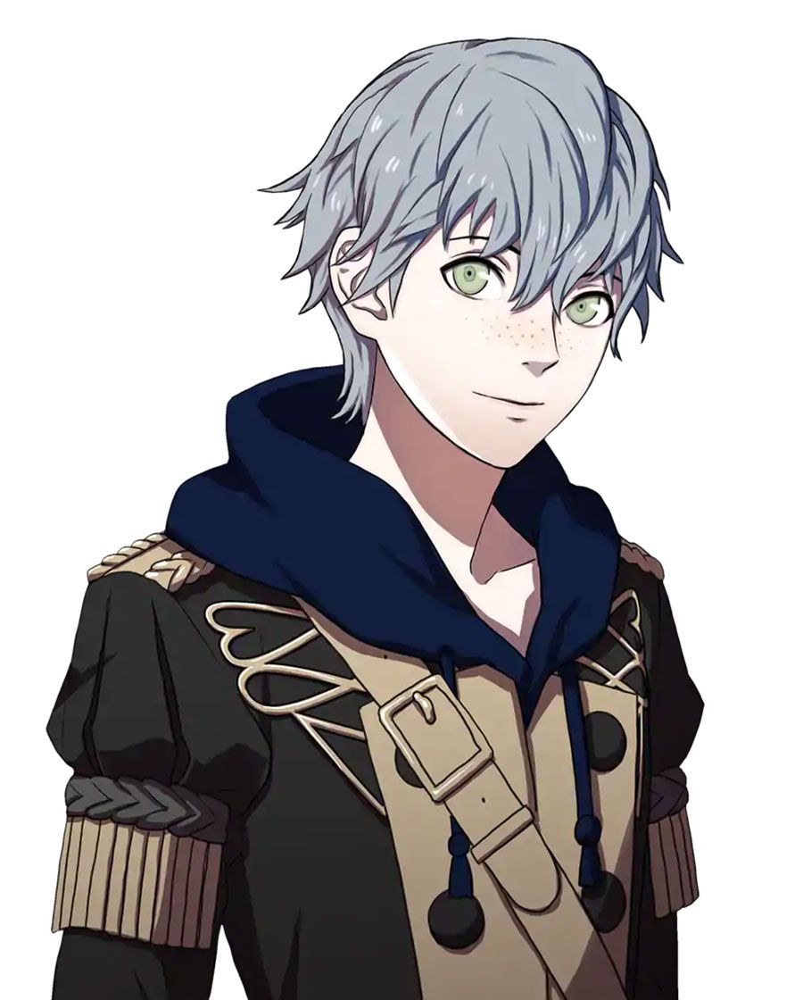
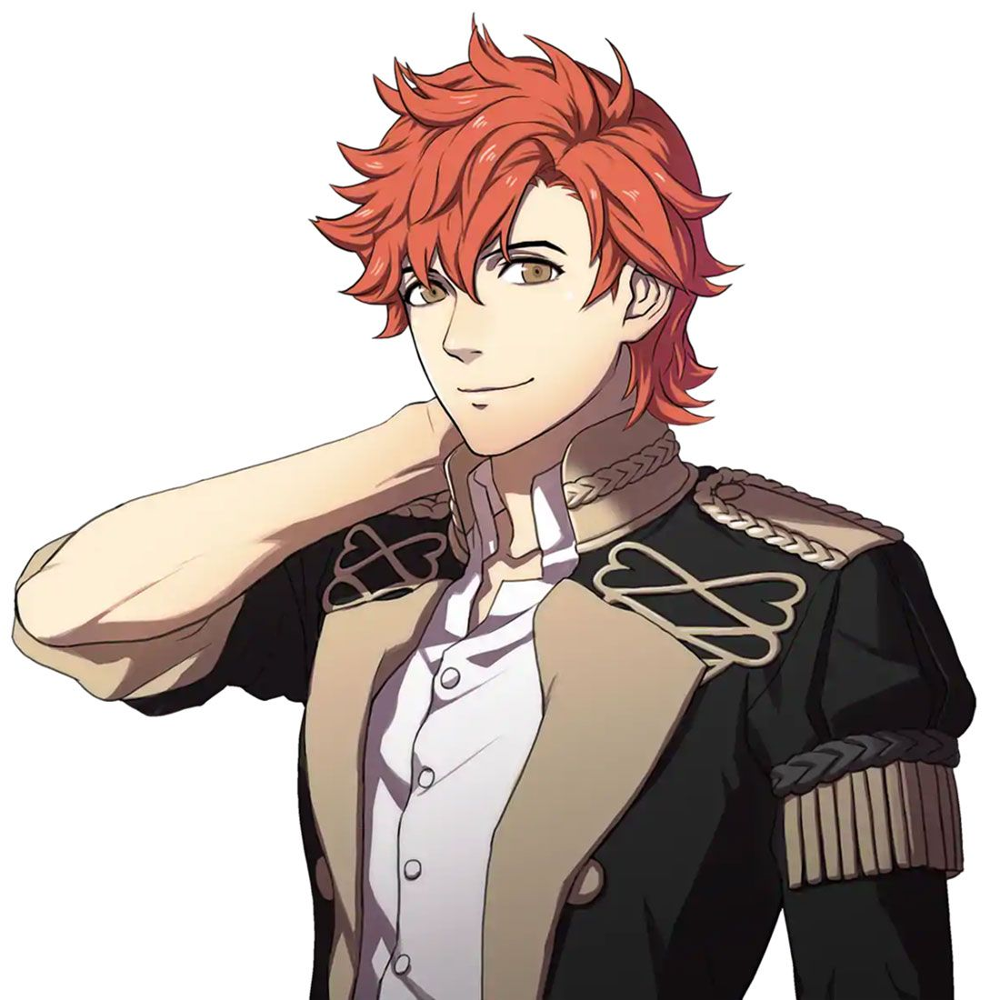
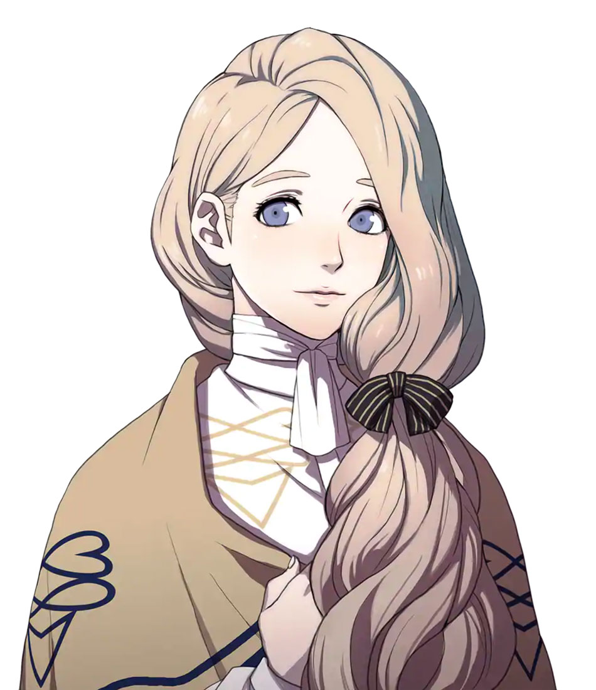
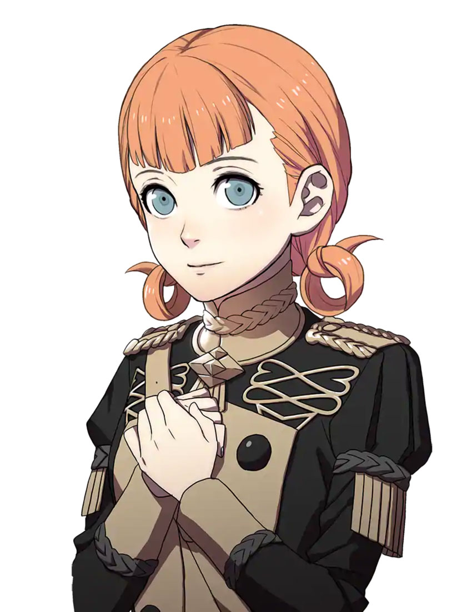
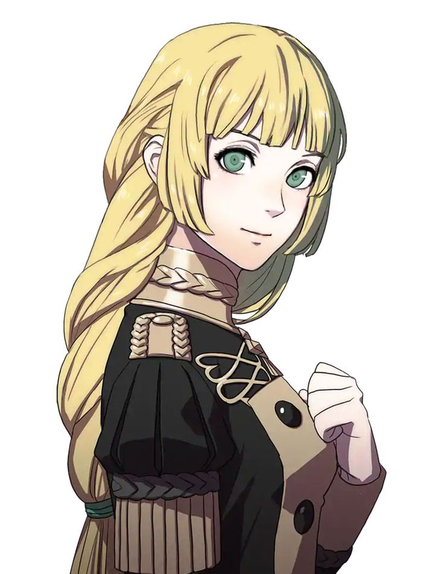

Dimitri Alexandre BlaiddydDimitri is the leader of the Blue Lion House, and he is going to the future king of his kindom. |
 |
|  | Dedue MolinaroDedeu is Dimitris loyal right-hand man. |
Felix Hugo FraldariusFelix is a bit of a harsh person, and he strongly dislikes Dimitri. |
 |
|  | Ashe UbertAshe is a kind-hearted person, and he was adopted into nobility. |
Sylvain Jose GautierSylvain likes to hit on girls like a playboy. |
 |
|  | Mercedes von MartritzMercedes is a very kind person who also loves to bake. |
Annette Fantine DominicAnnette is a sweet and smart person who enrolled into the officers accademy in hopes that doing so would allow her to find her father. |
 |
|  | Ingrid Brandl GalateaIngrid strives to become a proud knight in the future. |